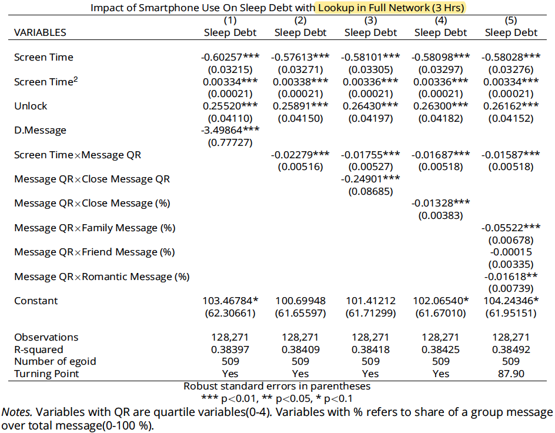

In the aggregation of communication events of Paper 1, we only match the communication events with the contacts reported in the current wave of social network surveys. However, the current social network surveys are not enough to cover all the contacts in the communication events. For example, let’s say an individual communicated with contact C on a day in the spring semester of 2016. However, contact C was not reported in the survey of the 2016 spring; instead, contact C was reported in the survey of the 2015 Fall. Contact C is taken as relation unknown or closeness unknown if we only match communication with the current surveys. In paper 2, we meet the same issue while constructing an individual’s social networks. We solve it by looking up the missed contacts in a broaden pool of surveys. Specifically, we looking up the missed contacts in: 1) complete social network surveys in which the focal person participated; or, 2) surveys with limitations to the closest N neighboring waves. In this example, we can identify contact C’s social relationship and closeness in the survey of the fall of 2015.
In this update, we applied a similar look-up strategy for Paper 1. By doing this, the communication events from closeness unknown contacts and relationship unknown contacts decreased. In contrast, those from identified contacts increased. The following figures illustrate a comparison of the proportions of communication categories with different look-up strategies.
1 Original Contacts (Without Look Up)
The following figure shows the categories of messages (SMS, MMS and WhatsApp) without look up 3 hours prior to sleep. The left column are the messages categorized by social closeness. We observe that 10.83 messages are from close unknown contacts, which accounts for over 50% of the total messages (20.36). The middle column shows the messages categorized by message type: SMS, MMS and WhatsApp. We find that the majority of the messages are SMS. The right column shows the messages categorized by social relationships. It suggests that 10.83 messages are from relation unknown contacts, which accounts for over 50% of the total messages (20.36). They are the same messages whose social closeness is unidentified in the left column.
2 Look Up With Limitation to 1 Neighbor
The following figure shows the categories of messages (SMS, MMS and WhatsApp) with look up limited to closest one wave of surveys three hours prior to sleep. We observe that messages with unidentified contacts decreased from 10.83 to 8.27. The categories of identified contacts increased correspondingly.
3 Look Up With Full Network
The following figure shows the categories of messages (SMS, MMS and WhatsApp) with look up in full social network surveys three hours prior to sleep. We observe that messages with unidentified contacts further decreased from 8.27 to 6.73. The categories of identified contacts increased correspondingly.
4 Estimation Results with Different Lookup Scopes
In this section, we show the estimation results with different lookup scopes.
4.1 Main Results without Lookup (3 Hrs)
4.2 Main Results with Lookup in Neighbor 1 Network (3 Hrs)
4.3 Main Results with Lookup in Full Network (3 Hrs)

In general, we find that the estimation results are generally consistent across different lookup strategies.